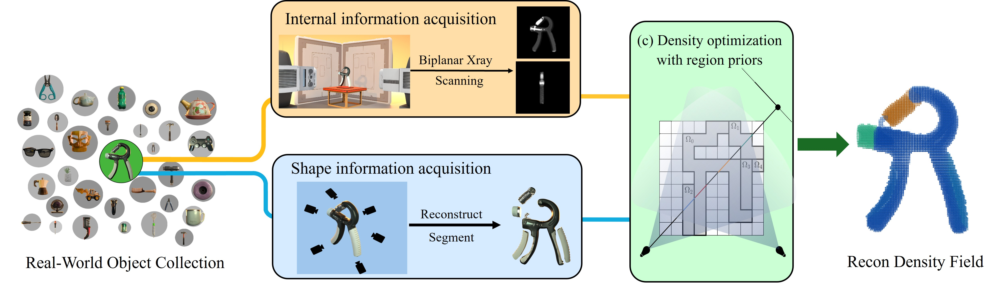
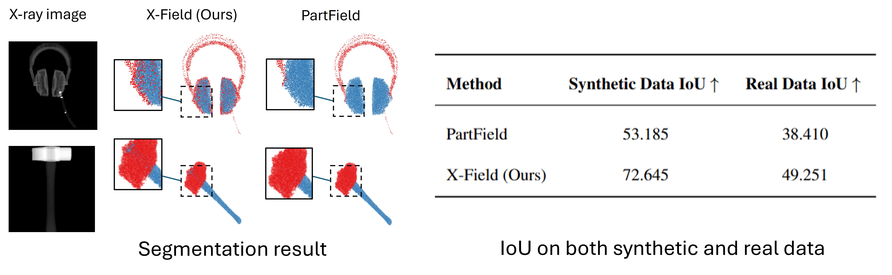

For every collected real-world object, we first use a bi-planar X-ray machine to capture the object's X-ray map. Then, we reconstruct its mesh with a multi-view generation method and segment it into parts. Based on the captured X-ray map and recovered segmented mesh, we develop a differentiable X-ray rendering process to estimate a density field of the given mesh.
Data Collection Pipeline

Differentiable X-ray Rendering
The density estimation task is formulated as a differentiable X-ray reconstruction problem. Given a voxelized mesh with an initialized linear attenuation coefficient (LAC) for each part, bi-planar X-ray images are rendered according to the Beer-Lambert law. The LAC are then optimized by minimizing the discrepancy between the rendered and captured (ground-truth) bi-planar X-ray images. Finally, the optimized LAC are approximately converted into density to obtain a volumetric density field.
XDen-1K Dataset

Gallery of XDen-1K Dataset For every object in our XDen-1K dataset, it contains image, scanned biplanar X-ray image, density field and approximately reconstructed density field.
Stats of XDen-1K Dataset: Our dataset contains 1000 real-world objects and spans 148 categories, covering a broad spectrum of everyday items such as tools, kitchenware, and electronics, providing rich variation in geometry, size and materials.
XDen-1K Application
X-ray-conditioned volume segmentation

X-ray image contains collapsed depth information which reveals internal material information and can guide the prediction of volumetric segmentation and density estimation in a physically grounded way. Thus, we propose X-Field, adapting PartField, a strong part-aware feature extractor, to address volumetric density estimation. We additionally collect a synthetic dataset based on PartNeXt to train our X-Field. The volumetric density can then be clustered into material-aware parts.
We then test the volumetric segmentation ability of X-Field, our X-ray conditioned model and the original PartField on both synthetic and real datasets. The results show that with X-ray as condition, the model can perform better in volumetric segmentation and especially inner structure prediction.